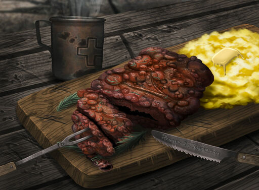

Baked Bloatfly

Description
A succulent whole bloatfly cooked to perfection. Served with all the trimmings. Don't worry about the radiation sickness, it adds to the experience!
Ingredients
- Bloatfly Meat
- 2 Whole potatoes
- Bottle of your favourite beer
Step-bystep instructions
- Find your finest cooking stick and roast your bloatfly meat over an open fire, around 10-15 minutes. (Watch out for raiders!)
- Bring a pot of water to the boil, add your potatoes and boil for 15 minutes. (Purified water works best but dirty water will suffice.)
- Mash your potatoes to a fine creamy consistancy.
- Serve your bloatfly steak with your mashed potatoes. Wash it down with your favoutite beer. (You'll need too.)